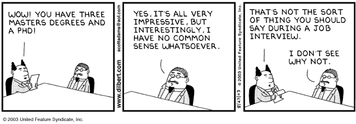

7400: iPPL
Welcome to Intensive Principles of Programming Languages.

The course has two objectives. The first one is to introduce students to the research area of programming languages. As such it covers basic theoretical ideas and practical techniques for modeling and analyzing programming languages. The second one is to expose students to the basic principles of research processes in computer science: how to ask/articulate questions and how to recognize elements of solutions.
Not The course does not teach people how to pick or construct the best programming language for a project. Answering this (common) question would be as much a study in sociology and psychology (into the conservative nature of post-graduate programmers) as a study in technical factors. (The technically best programming language for a task is almost never chosen "because we have never worked with that language before".)